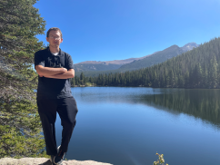

Corwin Anthony Schuerch | WDD 130 Online
Hey all, I'm Cory. I grew up in Colorado with quite a good family to help me out. I love playing tennis
and birdwatching. I'm a little bit shy, but if you get me talking it'll be hard to keep me quiet. There's not much
intresting about me overall. I'm currently working a full-time job while doing full-time school at the same time.